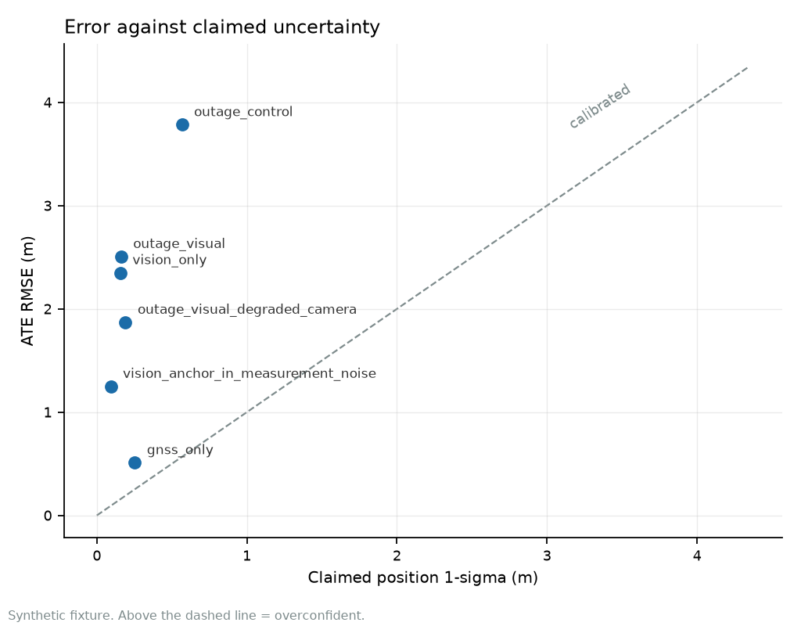
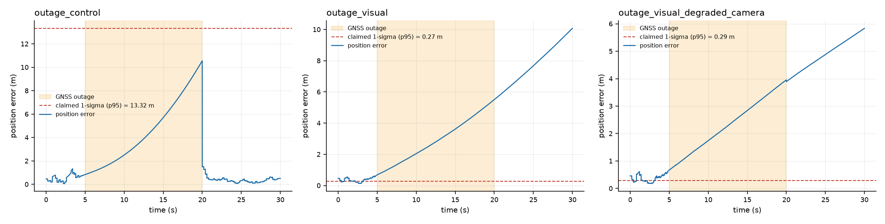
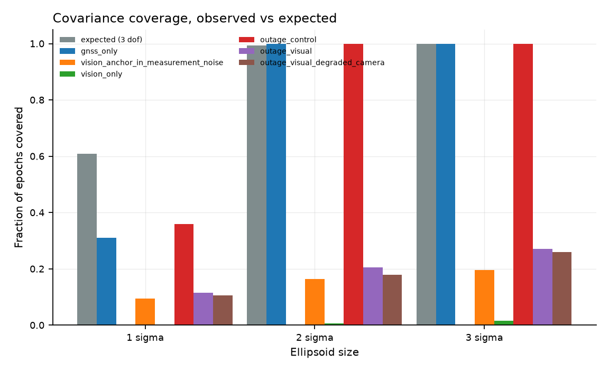
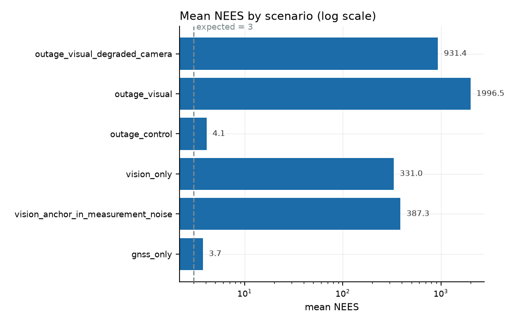

contested-nav
GNSS-denied navigation with an uncertainty model that is measured rather than asserted.
This project exists because of one uncomfortable result. A 21-state error-state Kalman filter fuses visual odometry and GNSS, and when GNSS is denied mid-run the filter reports about 0.161 m of position uncertainty while being 2.541 m wrong. The filter is not crashing, not diverging, and not producing a warning. It is confidently incorrect, and no amount of tuning fixes it. Everything below is published so that the failure is inspectable.
Read this before the numbers. Every result on this page comes from a known-answer synthetic fixture: an analytic trajectory with a filter initialised exactly at the truth. These are not field measurements, and nothing here should be read as performance on real sensor data. No real capture is included in this repository.
The synthetic setting is chosen precisely so the error is attributable: because the initial state is exact, every subsequent error belongs to the estimator rather than to a mis-initialised filter or an approximate ground truth.
The finding
The cause is structural, not a coding slip. The visual front end supplies a relative transform
between consecutive frames, so the absolute pose has to come from somewhere. The filter declares
an anchor pose at the start of the run and carries its error as two estimated states
(c_p, c_t). That is correct, and it works when a GNSS solution keeps
the anchor honest. It fails when GNSS disappears, because then the only thing constraining the
anchor is the anchor itself.
Treating the anchor error as measurement noise instead, which is the obvious shortcut, is demonstrably worse: it drops coverage to 16% while looking identical in the source. Both variants are in the benchmark so the comparison is reproducible.
The fix is a pose graph over the visual constraints, which models the correlation the error-state
form cannot express. That is not implemented yet, and until it is, vision_enabled
defaults to False. A filter that is wrong by 3 m should not be handed to a caller
who did not ask for that failure mode.

Calibration is reported as two tests, not one
A filter can be marginally overconfident almost everywhere while never producing an error outside its 2-sigma ellipsoid, and collapsing that into a single "calibrated" flag throws away half the evidence. So this project reports a bulk verdict (mean NEES against its expectation) and a tail verdict (coverage, by Wilson interval), and names the disagreement when they disagree.
| Scenario | ATE RMSE (m) | Claims 1σ (m) | Mean NEES | Coverage @ 2σ | Verdict |
|---|---|---|---|---|---|
| GNSS only (control) | 0.503 | 0.252 | 3.7 | 100.0% | mixed bulk overconfident, tail underconfident |
| Dead reckoning (no aiding) | 1.877 | n/a | n/a | n/a | no covariance reported |
| Anchor as measurement noise (defect) | 1.307 | 0.091 | 387.3 | 16.0% | overconfident |
| Vision only | 2.309 | 0.156 | 331.0 | 0.7% | overconfident |
| GNSS denied, vision off (control) | 3.782 | 0.567 | 4.1 | 100.0% | mixed bulk overconfident, tail underconfident |
| GNSS denied, vision on | 2.541 | 0.161 | 419.4 | 20.0% | overconfident |
| GNSS denied, 30% frames dropped | 1.872 | 0.190 | 216.6 | 18.5% | overconfident |
Dead reckoning has no row for claimed uncertainty or NEES, and that is deliberate: an integrator with no uncertainty model has nothing to calibrate, and printing a covariance it never computed would be the same error as printing one it does not deserve.
The outage control is the honest comparison. With vision off, the error grows to 3.78 m and the filter's uncertainty grows with it, so coverage stays at 100%. Turning vision on makes the number smaller and the filter far less honest. Adaptive covariance inflation (ADR-0006) recovered much of the aided case's error, which removed the accidental signal that used to warn a reader off it: sorting by ATE no longer separates the dishonest filter from the honest one.



What is actually in the filter
Twenty-one states, in the error-state form: attitude error, velocity error, position error, gyro and accel bias error, plus the six anchor-error states. Covariance is propagated in the 21×21 form and updated with the Joseph formulation, so the matrix stays symmetric positive definite through the run rather than drifting until something breaks.
The measurement Jacobians are where the original bug lived, and they are worth stating because
the frame error is easy to make and invisible in review. For a relative visual transform the
anchor-error Jacobian is -R_rel_pred, not +R_rel_pred, and the rotation
blocks are ±R_rel_pred rather than ±I because
rot_log(Q Exp(v) QT) = Q v conjugates the increment into the
previous body frame. That sign and frame are what make modelling the anchor as filter state
correct rather than merely different.
Reproducing every number here
No number on this page is typed in by hand. The table and the figures are generated from a seeded scenario file, and CI runs the benchmark and both robustness sweeps twice and fails if any two runs disagree.
git clone https://github.com/Telschow/contested-nav
cd contested-nav
python -m pip install -e ".[dev]"
python -m pytest # 629 collected: 624 pass, 3 skip, 2 xfail on a fresh clone
python scripts/run_benchmark.py --markdown
python scripts/seed_sweep.py --seeds 10
python scripts/scene_sweep.py
python scripts/make_figures.py
Absolute pose error is reported four ways and never alone, because the alignment convention
changes the number by metres: none for a filter already in the reference frame,
rigid fitted over the whole sequence, rigid_start fitted on the first
20% only so it cannot absorb accumulated drift, and similarity with a free scale.
An ATE quoted without its alignment is not a result. The figures and the headline table both use
none, which is the strictest choice here.
Status and limits
- Not field validated. Synthetic fixture only. No real capture is vendored or evaluated.
- Visual aiding under GNSS denial is not trustworthy yet, and is disabled by default. This is the central open result, not a footnote.
- FDIR detects implausible updates but does not explain them. The chi-square gate isolates a channel and reports how long it was out, but it does not separate multipath from spoofing from sensor degradation. See ADR-0005.
- The calibrated-covariance failure is mitigated, not fixed. The gate assumed a calibrated innovation covariance the filter does not have when the position covariance has collapsed, which cost 1.6 m of ATE in the GNSS-denied row above. That was blocker B5, closed by ADR-0006 with a per-channel NIS window and adaptive GNSS covariance inflation: ATE 5.059 m to 2.541 m, rejections 51 to 5, false-alarm rate unchanged.
- The filter is still overconfident under visual aiding. Mean NEES 419.4 against a nominal 3, 2σ coverage 20.0% where 95% is required. It converges and is confidently wrong. Blocker B1 is open, and it is a pose-graph problem that no FDIR threshold will move. It holds at every one of 10 noise seeds and in all 8 scenes.
- Not a flight-ready estimator. No sensor driver, no live front end, no real-time loop.
- Scene generalisation is shown; external validity is not. Eight scenes vary trajectory geometry over a 4.65× path-length range and all seven verdicts hold. No real capture, no measured sensor characteristic, and no outage-timing variation.
- Alignment fits positions only, so attitude error survives a rigid fit untouched. Reported separately for that reason.
Product management and systems engineering
Three documents in docs/product_management/, written against the measured state of the
repository. Every figure is tagged as measured, derived, configured, estimated or proposed, and the
things that are not verifiable today are marked NOT VERIFIED rather than left out.
- System Requirements Specification — the three operational user needs, 32 technical requirements, per-requirement verdicts. Only one OUN passes in full.
- SWaP-C and Sensor Selection Trade-off — three platform profiles, IMU grades, cost and power bands, and when to move off pure ESKF dead reckoning.
- FDIR and Adversarial Spoofing Strategy — threat taxonomy, the two-stage defence architecture, and what the operator is actually shown.
What this is, and is not
A research and evaluation library in a publicly studied field. Not a navigation product, not field-validated, not novel, and not qualified for any platform.
The failure documented above is a known failure mode with established remedies, and this repository implements none of them. Overconfidence in EKF-based visual-inertial estimation was traced to an observability mismatch in the peer-reviewed literature by 2014, and remedies — observability-constrained EKF, first-estimate Jacobians, invariant filters, pose graphs — are established. What this repository adds is a harness that measures the failure and refuses to ship the broken configuration. Every claim below is labelled, and every external claim carries a citation with an access date.
- Assessment index and claim labels — what this is, what it is not, and how to read every claim.
- Defense relevance — capability-level mapping, and the table of overstating words with permitted alternatives.
- Dual-use analysis — risk assessment, design limits, and what a deployer would still have to supply.
- Technology mapping — the technical areas and the public ecosystem, with the closest prior work named.
- Limitations — consolidated, ordered by how much each one changes the conclusions.
- Sources — every citation, with source type and access date.
Reading order
The prose documents live in the repository as Markdown rather than being duplicated here, so there is only ever one copy of each to keep correct. This site carries the figures and the regenerated numbers.
- Architecture — states, Jacobians, update sequence.
- Calibration guide — how to read NEES and coverage, and where they mislead.
- ADR-0005 — why the update is gated before the gain is formed.
- ADR-0006 — why re-acquisition is bounded by drift times silence.
- ADR-0007 — spoof-permanence escalation and the detection signal it still lacks.
- ADR-0008 — the frozen-anchor cross-check: correct arithmetic, unreachable guard, and why it is documented as not yet working.
- Decision records — why the anchor is filter state, why Joseph, why visual is off by default, and the quaternion convention.
- Roadmap — what is planned, what is deliberately deferred, and which items were closed.
- Design constraints — the quality ratchets, their floors, and the command that measures each one.
- Source